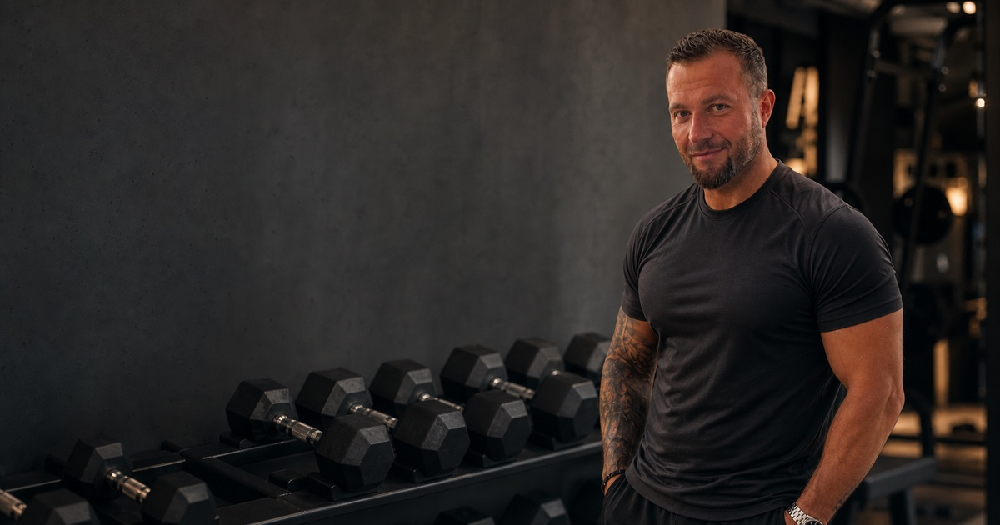

Сколько подходов нужно для роста мышц
11 августа 2026 · Андрей Шелест

Кто-то советует делать шесть подходов на мышцу в неделю. Кто-то называет десять. А в некоторых программах легко насчитать двадцать и больше.
Отсюда нормальный вопрос: сколько подходов на группу мышц действительно нужно для роста?
Короткий ответ такой: для большинства тренирующихся около 10 качественных рабочих подходов на мышечную группу в неделю можно использовать как отправную точку. Но это не обязательная норма и не магическая граница. Новичок способен расти на меньшем объёме. Опытному спортсмену иногда требуется больше. А человеку, который плохо восстанавливается, десять тяжёлых подходов могут оказаться лишними.
Цифра помогает начать. Дальше решает ваша реакция на нагрузку.
Что считать рабочим подходом
Разминочные подходы в недельный объём обычно не включают. Их задача состоит в том, чтобы подготовить суставы, движение и нервную систему к основному весу.
Рабочий подход выглядит иначе. Вы выполняете упражнение с контролируемой техникой, а последние повторения требуют заметного усилия. При этом не обязательно каждый раз доходить до полного отказа. Для большинства подходов можно оставить примерно 1-3 качественных повторения в запасе.
Допустим, перед жимом лёжа вы сделали:
- 20 повторений с пустым грифом;
- 10 повторений с 40 килограммами;
- 5 повторений с 60 килограммами;
- затем три подхода по 8 повторений с рабочим весом.
В дневник недельного объёма для грудных мышц пойдут три последних подхода. Первые три подготовили вас к работе, но не были основной нагрузкой.
Это важно. Если считать каждое касание гантели полноценным подходом, программа на бумаге быстро становится огромной. Мышцы от этого не получают больше стимула.
Почему все говорят примерно о 10 подходах
В обновлённых рекомендациях Американского колледжа спортивной медицины для гипертрофии приведён практический ориентир: около 10 подходов на мышечную группу в неделю. Речь идёт о более высоком недельном объёме по сравнению с минимальной нагрузкой для общего здоровья, а не о жёсткой норме для каждого человека.
Исследования в целом показывают дозозависимую связь. Когда недельный объём растёт, мышечный рост в среднем тоже увеличивается. Но каждый следующий подход приносит всё меньше дополнительной пользы.
Свежая метарегрессия, опубликованная в Sports Medicine, объединила 67 исследований и данные 2 058 участников. Авторы увидели положительную связь между количеством недельных подходов и гипертрофией, но с убывающей отдачей. Проще говоря, разница между двумя и восемью подходами обычно важнее, чем разница между восемнадцатью и двадцатью четырьмя.
Есть важное ограничение. Средний возраст участников этого анализа составлял около 25 лет, а почти четыре пятых выборки были мужчинами. Поэтому нельзя брать красивую кривую из исследования и объявлять её точной инструкцией для женщины 48 лет, начинающего спортсмена или человека с тяжёлой физической работой.
Наука показывает направление. Персональный объём всё равно приходится подбирать.
Один подход может нагружать несколько мышц
Подсчёт усложняется в базовых упражнениях. Жим лёжа работает не только на грудные мышцы. Нагрузку также получают трицепсы и передняя часть плеча. Тяга верхнего блока тренирует широчайшие, но вместе с ними работают бицепсы. Приседания нагружают квадрицепсы и ягодичные мышцы.
Практический способ считать выглядит так:
- основной целевой мышце засчитываем полный подход;
- мышце, которая заметно помогает движению, можно условно засчитать половину подхода;
- слабое косвенное участие можно не считать.
Например, четыре подхода жима лёжа можно записать как четыре подхода для груди и примерно два для трицепса. Это не физиологическая формула. Это удобный способ не делать вид, что руки вообще не работали, и одновременно не приравнивать жим к изолированному разгибанию на трицепс.
Авторы метарегрессии 2026 года также сравнивали разные способы учёта прямых и косвенных подходов. Наиболее убедительно выглядел дробный метод, при котором косвенная работа учитывалась как половина подхода.
Но не нужно превращать дневник в бухгалтерию с точностью до сотых. Его задача состоит в том, чтобы увидеть общую картину.
С какого объёма начать
Если вы только начинаете силовые тренировки, разумно стартовать с 6-8 рабочих подходов на крупную мышечную группу в неделю. Их можно распределить на две тренировки.
Например, для груди:
- понедельник: три подхода жима гантелей;
- четверг: три подхода жима в тренажёре.
Получается шесть прямых подходов. Для новичка этого часто достаточно, потому что почти любая регулярная нагрузка оказывается новым стимулом.
Если вы уже тренируетесь несколько месяцев и техника стала стабильной, можно двигаться к 8-12 подходам. Не обязательно сразу добавлять новые упражнения. Иногда достаточно добавить по одному подходу в два тренировочных дня.
Опытному спортсмену может понадобиться 12-16 подходов или больше. Но высокий объём имеет смысл только тогда, когда он даёт измеримый результат. Если веса не растут, повторения падают, сон ухудшается, а мышцы постоянно болят, добавление ещё пяти подходов редко решает проблему.
Это не официальные медицинские нормы. Это рабочие диапазоны для настройки программы. Начинать лучше с меньшего количества и добавлять по необходимости.
Распределяйте объём по неделе
Двенадцать подходов за одну тренировку и шесть подходов дважды в неделю дают одинаковую сумму только в таблице. Качество работы может сильно отличаться.
После нескольких тяжёлых подходов утомление растёт. Техника становится менее стабильной, рабочий вес снижается, а последние упражнения иногда выполняются просто ради галочки.
Поэтому недельный объём чаще удобнее разделить минимум на два занятия. Восемь подходов для спины могут выглядеть так:
- понедельник: три подхода горизонтальной тяги и один подход тяги верхнего блока;
- пятница: три подхода тяги верхнего блока и один подход горизонтальной тяги.
Мышца дважды получает стимул, а каждый подход выполняется в более свежем состоянии.
Частота сама по себе не гарантирует больший рост. Её польза в другом: она помогает удобно разместить нужный объём и сохранить качество повторений.
Общий принцип частоты и недельного планирования подробнее разобран в статье «Силовые тренировки в 2026: что изменил ACSM».
Как понять, что подходов достаточно
Не оценивайте программу по одному занятию. Посмотрите на четыре недели.
Объёма, скорее всего, достаточно, если:
- вы постепенно добавляете повторения или небольшой вес;
- техника остаётся стабильной;
- мышца получает нагрузку, но болезненность не мешает следующей тренировке;
- сон и обычная активность не ухудшаются;
- размеры, фотографии или силовые показатели медленно меняются в нужную сторону.
Последний пункт требует терпения. Мышцы не обязаны визуально меняться каждую неделю. А вес тела может стоять из-за питания, даже когда силовые показатели растут.
Смотрите на несколько признаков сразу. Один хороший памп ещё ничего не доказывает. Его отсутствие тоже не означает, что подход был бесполезным.
Когда объём пора увеличить
Добавлять подходы стоит не потому, что новая программа выглядит внушительнее. Нужен повод.
Предположим, четыре недели вы выполняете восемь подходов на грудь. Техника стабильна, питание и сон не менялись, но повторения и рабочий вес перестали расти. При этом к следующей тренировке вы полностью восстанавливаетесь.
Тогда можно добавить два недельных подхода. Например, по одному в каждую тренировку. После этого снова наблюдать три-четыре недели.
Не меняйте одновременно объём, упражнения, частоту и питание. Иначе вы не поймёте, что именно сработало.
Когда подходов уже слишком много
Лишний объём часто маскируется под трудолюбие. Человек добавляет упражнения, потому что не видит прогресса, хотя его проблема уже состоит в усталости.
Проверьте программу, если несколько недель подряд:
- результаты снижаются;
- привычный вес ощущается тяжелее;
- техника ухудшается раньше обычного;
- болезненность сохраняется до следующего занятия;
- пропадает желание тренироваться;
- сон становится хуже;
- локти, плечи или колени постоянно раздражены нагрузкой.
Эти признаки не позволяют поставить диагноз. Но они показывают, что восстановление и структура программы требуют внимания. При выраженной боли, травме или ухудшении самочувствия следует обратиться к врачу.
Иногда достаточно убрать 2-4 подхода, сохранить упражнения и посмотреть, вернётся ли прогресс. Сокращение нагрузки не всегда означает шаг назад. Порой именно оно возвращает качественную работу.
Пример недельного подсчёта
Допустим, человек тренирует всё тело два раза в неделю.
Понедельник
- жим гантелей: три подхода;
- тяга верхнего блока: три подхода;
- жим ногами: три подхода;
- сгибание ног: два подхода;
- подъём гантелей на бицепс: два подхода.
Четверг
- жим в тренажёре: три подхода;
- горизонтальная тяга: три подхода;
- присед с гантелью: три подхода;
- румынская тяга: два подхода;
- разгибание рук на блоке: два подхода.
За неделю грудь получает шесть прямых подходов. Спина тоже получает шесть. Квадрицепсы получают около шести, задняя поверхность бедра четыре, руки получают прямую и косвенную работу.
Для новичка это уже полноценная программа. Не нужно срочно доводить каждую строку до десяти. Сначала стоит проверить, растут ли повторения и насколько хорошо человек восстанавливается.
Простой алгоритм на четыре недели
Сначала посчитайте только рабочие подходы. Затем выберите одну мышечную группу, прогресс которой вас не устраивает.
На ближайшие четыре недели:
- сохраните упражнения;
- распределите объём минимум на два занятия;
- оставляйте примерно 1-3 повторения в запасе;
- записывайте вес и повторения;
- не добавляйте подходы каждую неделю;
- в конце периода сравните результаты и восстановление.
Если прогресс есть, оставьте объём прежним. Если прогресса нет, но восстановление хорошее, добавьте два недельных подхода. Если результаты падают и усталость накапливается, сначала сократите объём.
Так программа становится управляемой. Вы не угадываете, а проверяете.
Что в итоге
Около 10 рабочих подходов на мышечную группу в неделю является хорошим ориентиром, но плохой догмой.
Новичку часто хватает 6-8 подходов. Более опытный человек может начать с 8-12. Дальше объём меняют по результату, а не по чужой таблице. Косвенную работу в базовых упражнениях стоит учитывать, недельную нагрузку удобнее делить на два занятия, а каждый новый подход должен иметь понятную причину.
Если вы не знаете, с чего начать, сделайте простое: откройте дневник и посчитайте рабочие подходы за последнюю неделю. Уже этот подсчёт часто объясняет, почему одна мышечная группа не получает нагрузки, а другую вы тренируете почти каждый день.
Источники
- ACSM: обновлённые рекомендации по силовым тренировкам, 2026
- Pelland et al.: недельный объём, частота и рост мышц, Sports Medicine
- Schoenfeld et al.: дозозависимая связь объёма и гипертрофии
- Currier et al.: параметры силовой тренировки и гипертрофия
Андрей Шелест, персональный онлайн-тренер, биоэколог и МСМК по версии НАП в двух силовых дисциплинах. Основатель проекта ShelestFit.